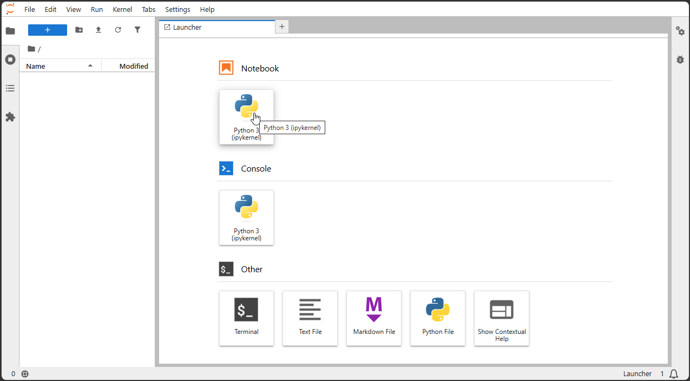
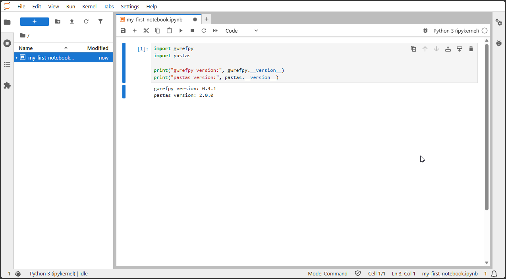

Jupyter Notebooks
Jupyter Notebooks combine explanatory text and executable Python code in a single document. Most exercises and examples in this course will be provided as Jupyter Notebooks, allowing participants to modify code, rerun calculations, and immediately visualize the results.
Create a notebook
To create a new Jupyter Notebook in Jupyter Lab, click on the “Python 3” button in the “Notebook” section of the launcher. This will open a new notebook with an empty code cell where you can start writing your Python code.

Write the code
You can write Python code in the code cells of the notebook. To execute the code in a cell, you can either click the “Run” button in the toolbar or press Shift + Enter. The output of the code will be displayed directly below the cell.
Before the course start, check that you have the required packages installed. You can do this by running the following code in a notebook cell:
import gwrefpy
import pastas
print("gwrefpy version:", gwrefpy.__version__)
print("pastas version:", pastas.__version__)
gwrefpy version: 0.4.1
pastas version: 2.0.0
Your notebook should run without any errors. If you encounter any issues, please contact the course instructors for assistance.
Note
If you are using a virtual environment, make sure that you have activated it before opening Jupyter Lab. If you follow the instructions in the “Installation” section, you should have a working environment with all the required packages installed and your environment activated.
It migth take a few seconds for the packages to load, so please be patient.
The result of the code cell should look like this:
